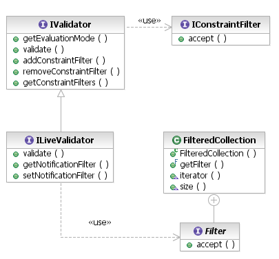

[as SVG]
Validation of EMF models is performed by invocation of the validation service. The ModelValidationService provides IValidators that a client may use to validate a selection of elements. The kinds of elements that are validated depends on the nature of the validator, as determined by the EvaluationMode requested by the client.
[as SVG]
The EMF Validation Framework provides two modes of constraint evaluation, defined by the EvaluationMode enumeration: BATCH and LIVE. The batch mode is used for static validation of a selection of model elements, usually in response to some user action such as selecting a Validate menu item or performing some transformation that requires validation of the model as precondition.
The live mode is used to validate changes to objects in some interval that may loosely be called a "transaction." In fact, the EMF Model Transaction API uses the live evaluation mode to implement validation of its transactions when they are committed. In general, though, it is up to a client of the validation framework to determine what are the semantics of a "transaction" and what it means to validate the changes in it.
Upon requesting a validator for the batch mode, a client may safely cast the validator to the IBatchValidator interface to configure it as necessary. The input to batch validation is a collection of EObjects (model elements) to be validated. The output is an IStatus carrying any problems reported by individual validation constraints; this result often is a multi-status.
List objects = myResource.getContents(); // objects to validate
// create a validator
IValidator validator = ModelValidationService.getInstance().newValidator(EvaluationMode.BATCH);
// use it!
IStatus results = validator.validate(objects);
if (!results.isOK()) {
ErrorDialog.openError(null, "Validation", "Validation Failed", results);
}
When performing a batch validation operation, it may be important to evaluate any live-mode validation constraints that may have been missed during manipulation of the model. For example, a model may have been imported from another application that didn't apply the same constraints. Simply as the batch validator to include live constraints. The batch validator also supports reporting progress via a progress monitor, which the generic validator interface does not:
// create a validator. We know it is a batch validator because we are
// asking for batch mode
final IBatchValidator validator = (IBatchValidator) ModelValidationService.getInstance()
.newValidator(EvaluationMode.BATCH);
validator.setIncludeLiveConstraints(true);
getWorkbench().getProgressService().run(true, true, new IRunnableWithProgress() {
public void run(IProgressMonitor monitor) {
List objects = myResource.getContents();
IStatus results = validator.validate(objects, monitor);
if (!results.isOK()) {
ErrorDialog.openError(null, "Validation", "Validation Failed", results);
}
}});
Upon requesting a validator for the live mode, a client may safely cast the validator to the IBatchValidator interface to configure it as necessary. The input to live validation is a collection of Notifications representing discrete changes to model elements (the notifiers). These notifications primarily determine which constraints are applied to an element. For efficiency, live-mode constraints should declare the changes that trigger them, but they still validate the notifying object as a whole (to support optional invocation in batch mode).
List notifications = transaction.getChanges(); // changes in some hypothetical transaction scope
// create a validator
IValidator validator = ModelValidationService.getInstance().newValidator(EvaluationMode.LIVE);
// use it!
IStatus results = validator.validate(notifications);
if (!results.isOK()) {
ErrorDialog.openError(null, "Validation", "Validation Failed", results);
}

[as SVG]
The live validator also can be supplied with a filter, to weed out notifications that should not be considered for validation. The default filter, when none is provided by the client, filters out notifications from objects that are not (or no longer are) attached to a Resource.
List notifications = transaction.getChanges(); // changes in some hypothetical transaction scope
// create a validator
ILiveValidator validator = (ILiveValidator) ModelValidationService.getInstance()
.newValidator(EvaluationMode.LIVE);
// validate only changes to containment references
validator.setNotificationFilter(new FilteredCollection.Filter() {
public boolean accept(Object element) {
Object feature = ((Notification) element).getFeature();
return feature instanceof EReference && ((EReference) feature).isContainment();
}
});
IStatus results = validator.validate(notifications);
if (!results.isOK()) {
ErrorDialog.openError(null, "Validation", "Validation Failed", results);
}
In either batch or live validation scenarios, a client may have a need to evaluate only some well-defined subset of the constraints that are available. For this, a validator can be configured with any number of IConstraintFilters. Only constraints that match all of the filters are validated. There is no default filter. For example, to check only for severe problems (e.g., to evaluate preconditions of some model transformation):
List objects = myResource.getContents(); // objects to validate
IValidator validator = ModelValidationService.getInstance().newValidator(EvaluationMode.BATCH);
// validate only error severity and worse
validate.addConstraintFilter(new IConstraintFilter() {
public boolean accept(IConstraintDescriptor constraint, EObject target) {
ConstraintSeverity sev = constraint.getSeverity();
return sev.toIStatusSeverity() >= IStatus.ERROR.
}
});
IStatus results = validator.validate(objects);
if (!results.isOK()) {
ErrorDialog.openError(null, "Validation", "Validation Failed", results);
}
Copyright (c) 2000, 2007 IBM Corporation and others. All Rights Reserved.